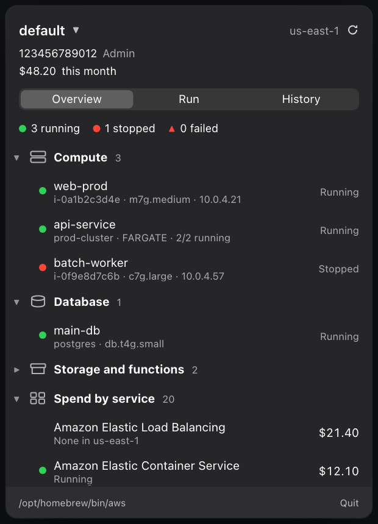
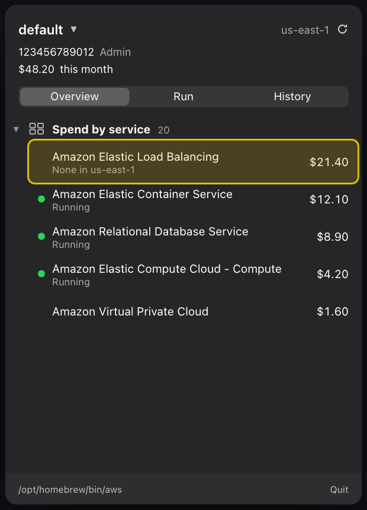
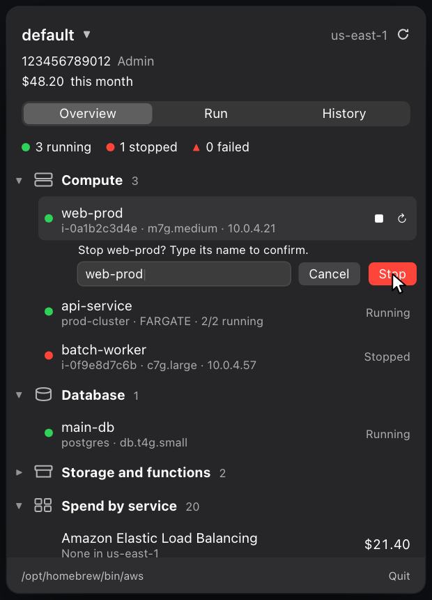
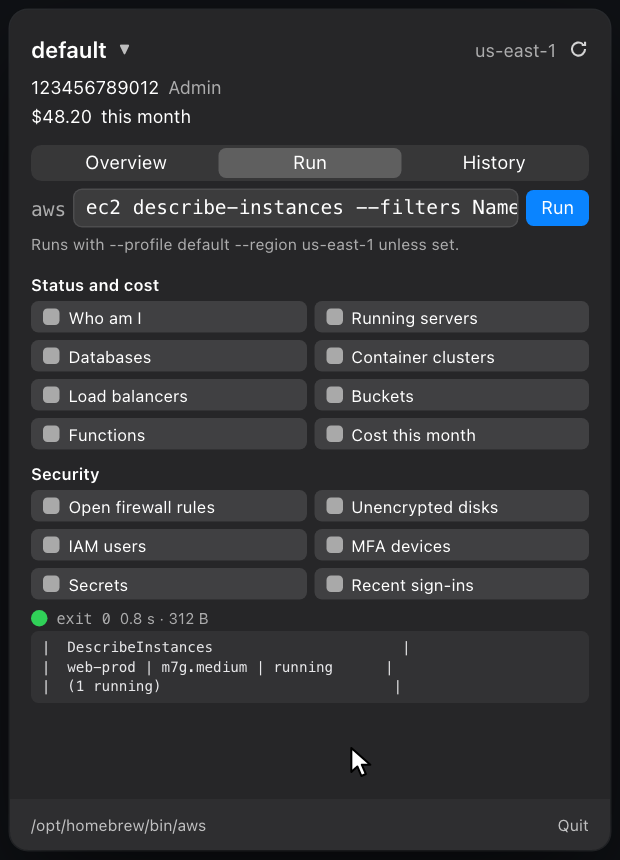

Your AWS account, in the menu bar.
AWSBar is a free macOS menu bar app. See what is running in AWS, what is stopped and what it costs.
Free and open source. Version 0.1.0 for macOS 14 or later.

Green is live. Red is stopped.
Every EC2 instance, ECS service, RDS database and load balancer gets a dot and a word. A summary line counts them, so one glance tells you what is on.
Billed. But nothing’s running.
The spend list comes from Cost Explorer. AWSBar checks each billed service against what actually exists, so a charge with nothing behind it stands out.

Stopping a server? Type its name.
Starting is one click. Stopping or restarting an EC2 or RDS instance only works once you type its exact name. One stray click cannot take production down.

Fourteen one-click commands.
Not sure what to run? The Run tab has buttons for the questions you actually ask. All of them only read. Type any aws command too, and AWSBar adds your profile and region.

All read-only. All one click.
Status and cost
- Who am I
- Running servers
- Databases
- Container clusters
- Load balancers
- Buckets and Functions
- Cost this month
Security
- Open firewall rules
- Unencrypted disks
- IAM users and MFA devices
- Secrets
- Recent sign-ins
Uses the aws CLI you already have.
- No network calls of its own.
- No analytics.
- No saved output.
AWSBar runs the aws command you installed, with the profiles already in your config. Sign-in uses your own SSO or console login. The history tab keeps the command line, exit code and timing only, and masks values that look like secrets.
- Install the AWS CLI and sign in once (
aws configure ssooraws login). - Download the disk image, open it and drag AWSBar to Applications.
- Right-click, then Open the first time. The app is not notarized yet, so if macOS blocks it, allow it under System Settings, Privacy & Security, Open Anyway.
- Click the green cloud in your menu bar.
Or build it yourself
brew install xcodegen xcodegen generate open AWSBar.xcodeproj
Questions.
- What does it need?
- macOS 14 or later and the AWS CLI. Your credentials stay where they already are.
- Which services does it show?
- EC2, ECS, RDS, load balancers, Lambda and S3, plus a spend list for every service with charges.
- Can it break anything?
- Only if you ask. Start, stop and restart exist for EC2, RDS and ECS, and stopping needs confirmation. The Run buttons only read.
- Why is the cost line a little behind?
- Cost Explorer updates a few times a day and bills $0.01 per request, so AWSBar reuses the numbers for six hours.